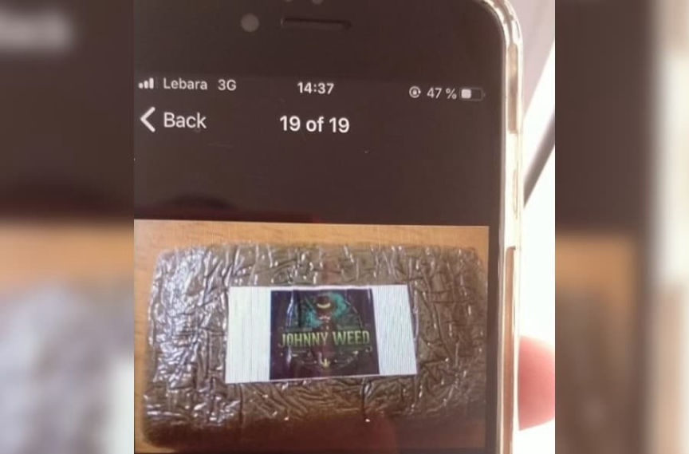
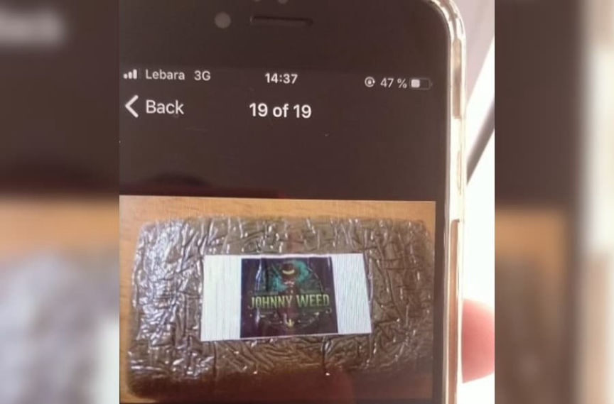

Dealer Who Identified Himself on EncroChat Sentenced to Prison
~2 min read | Published on 2022-06-26, tagged Drug-Bust, EncroChat, General-News, Sentenced using 428 words.
An EncroChat-using drug dealer was sentenced to 25 years in prison for selling Class A and Class B drugs.
During a hearing at Liverpool Crown Court, John Digweed, 33, of Harlech Road, Crosby, was sentenced to prison for 25 years for drug distribution and money laundering.
A jury convicted Digweed of conspiring to supply Class A drugs, including heroin, cocaine, ecstasy powder, and 2CB, and Class B drugs cannabis, ketamine, and amphetamine. The jury also convicted him of money laundering. During the trial, prosecutors showed the jury evidence of Digweed’s involvement in the supply of 12.5kg of heroin, 30-35kg of cocaine, 80kg of cannabis, 4kg of ketamine, and 3kg of amphetamine.
Merseyside Police arrested Digweed in March 2021 as a part of Operation Venetic. Operation Venetic was “an international operation targeting criminals who used a mobile encryption service, commonly referred to as EncroChat, in an attempt to evade detection when dealing drugs.”

After law enforcement agencies had hacked EncroChat, investigators examined messages sent and received by a drug dealer under the username “Diorpaw.” Investigators said Digweed identified himself in his messages to other EncroChat users.
In one example provided by police, one of Digweed’s contacts sent him a picture of a block of marijuana labeled “Johnny Weed.” Digweed responded, “HaHaHaHa lad who’s done that, its only missing dig out the name” My names Johnny Digweed init.” Digweed then sent the image to other EncroChat users. “His messages on the dark web revealed that he supplied drugs across the northwest and managed the supply of crack cocaine and heroin to Devon and Cornwall,” police said. Digweed referenced Cornwall, Bristol, Middlesbrough, London, Weston-Super-Mare, and Wales in other messages.
Superintendent Graeme Robson:
“Digweed’s covert messages via EncroChat revealed his clear involvement as a leading figure in drug conspiracies that could have caused immense suffering to families and residents in our community. In one message sent to other handles he brazenly identified himself in messages. The messages he sent also revealed that he operated a sophisticated and organised criminal enterprise.”
“We know the destruction that drugs cause and Merseyside Police remains relentless in our pursuit of these criminals and to bring down serious and organised criminal groups. I hope this result shows that Merseyside Police, will leave no stone unturned in our pursuit of these people who think they are above the law, and we will continue to target criminals like Digweed by thoroughly examining any evidence, messages and images we find.”
Drug dealer jailed for 25 years after identifying himself on ‘Dark Web’ | merseyside.police.uk
During a hearing at Liverpool Crown Court, John Digweed, 33, of Harlech Road, Crosby, was sentenced to prison for 25 years for drug distribution and money laundering.
John Digweed in his mugshot.
A jury convicted Digweed of conspiring to supply Class A drugs, including heroin, cocaine, ecstasy powder, and 2CB, and Class B drugs cannabis, ketamine, and amphetamine. The jury also convicted him of money laundering. During the trial, prosecutors showed the jury evidence of Digweed’s involvement in the supply of 12.5kg of heroin, 30-35kg of cocaine, 80kg of cannabis, 4kg of ketamine, and 3kg of amphetamine.
Merseyside Police arrested Digweed in March 2021 as a part of Operation Venetic. Operation Venetic was “an international operation targeting criminals who used a mobile encryption service, commonly referred to as EncroChat, in an attempt to evade detection when dealing drugs.”

A picture of a block of marijuana sent to Digweed on EncroChat
After law enforcement agencies had hacked EncroChat, investigators examined messages sent and received by a drug dealer under the username “Diorpaw.” Investigators said Digweed identified himself in his messages to other EncroChat users.
In one example provided by police, one of Digweed’s contacts sent him a picture of a block of marijuana labeled “Johnny Weed.” Digweed responded, “HaHaHaHa lad who’s done that, its only missing dig out the name” My names Johnny Digweed init.” Digweed then sent the image to other EncroChat users. “His messages on the dark web revealed that he supplied drugs across the northwest and managed the supply of crack cocaine and heroin to Devon and Cornwall,” police said. Digweed referenced Cornwall, Bristol, Middlesbrough, London, Weston-Super-Mare, and Wales in other messages.
Superintendent Graeme Robson:
“Digweed’s covert messages via EncroChat revealed his clear involvement as a leading figure in drug conspiracies that could have caused immense suffering to families and residents in our community. In one message sent to other handles he brazenly identified himself in messages. The messages he sent also revealed that he operated a sophisticated and organised criminal enterprise.”
“We know the destruction that drugs cause and Merseyside Police remains relentless in our pursuit of these criminals and to bring down serious and organised criminal groups. I hope this result shows that Merseyside Police, will leave no stone unturned in our pursuit of these people who think they are above the law, and we will continue to target criminals like Digweed by thoroughly examining any evidence, messages and images we find.”
Drug dealer jailed for 25 years after identifying himself on ‘Dark Web’ | merseyside.police.uk